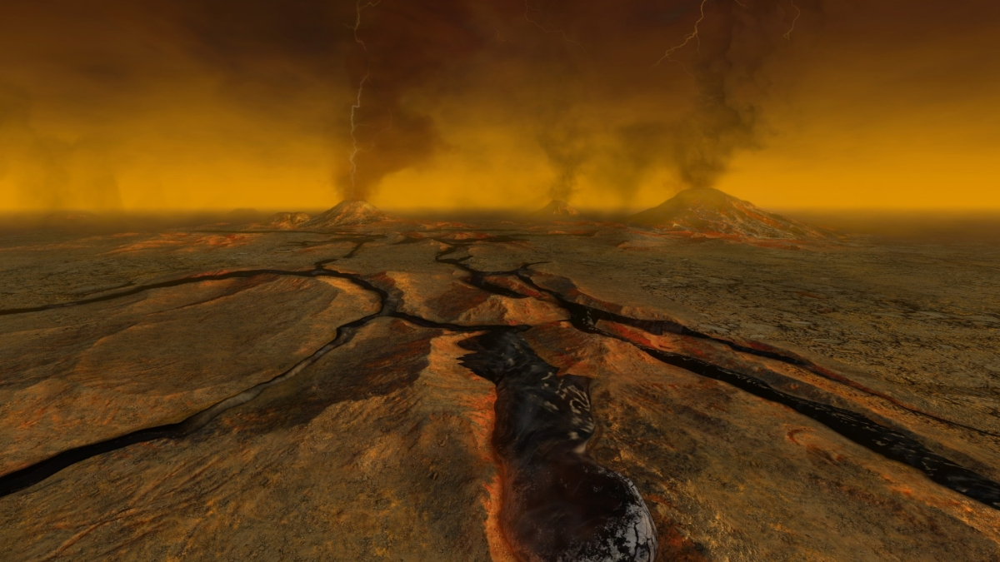
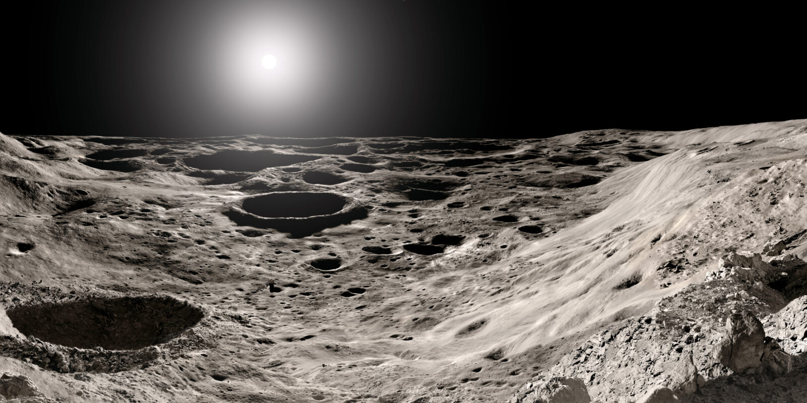

Would you believe me if I told you that Venus used to be very similar to Earth? Well, it's true. Venus used to have vast oceans engulfing nearly the entire crust of the planet. Venus is nearly the same size, mass, density, and gravity as Earth. Yet, how is it the hottest, most hellish planet in our Solar System?

In the early Solar System, Venus was truly Earth's doppelgänger. But the Sun was also dimmer and getting brighter. As its luminosity increased, it eventually triggered a runaway greenhouse effect, and the heat beaming down on Venus boiled the oceans. The water vapor, which is a potent greenhouse gas, rose up into the atmosphere, trapping in the already unbearable heat like an oven. On Earth, greenhouse gases are a major issue. For us, carbon dioxide from burning fossil fuels is gathered in our atmosphere, warming up the planet. Now imagine that for Venus, but instead of factories, an entire ocean's worth of heat-trapping water vapor begins to cover the planet like the thickest blanket known to man.
At the same time, volcanoes were spewing CO₂ into the sky, but this isn't a problem on Earth, since the oceans dissolve carbon dioxide and cycle it back into the crust. Yet on Venus, the oceans are checking out, causing volcanic outgassing to steadily fill the atmosphere with thick CO₂.
Mercury is closer to the Sun and experiences its blistering heat to a significantly larger extent. Yet as the Sun sets, nothing is keeping that heat in the atmosphere, since there essentially isn't one. Without those necessary gases to trap the warmth, the heat escapes straight back into space. Venus, on the other hand, with its severe greenhouse effect, loses very little heat, meaning it just gets warmer and warmer.

With the dangers of a planetary greenhouse effect in mind, stay curious and gaseous.